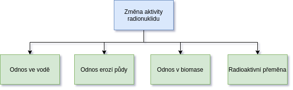
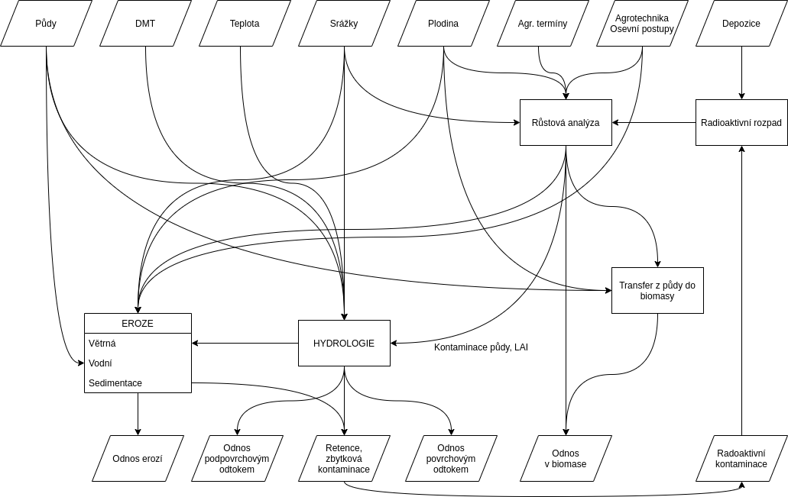
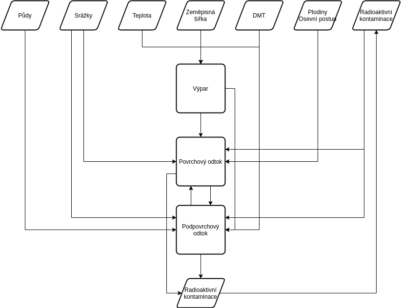
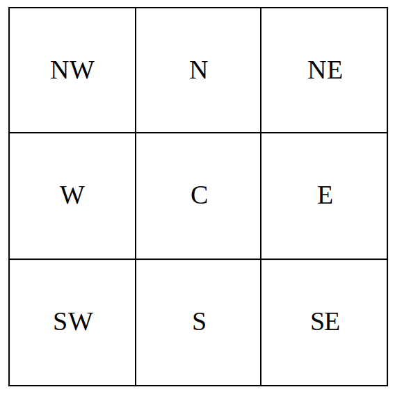
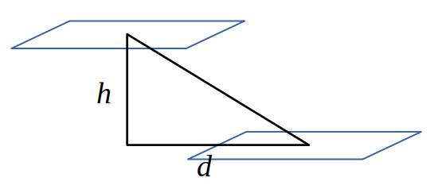
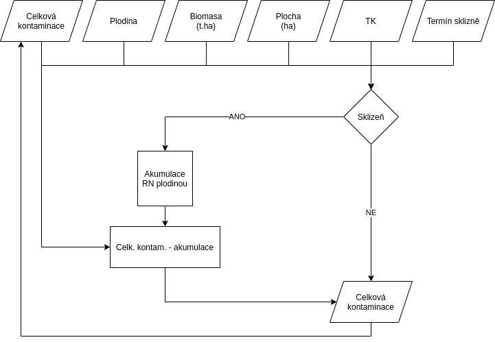

Struktura programu¶
Struktura programu RadAgro byla definována na základě předpokladu ztráty, respektive změny aktivity v prostředí, která je daná na jedné straně odnosem radionuklidu z prostředí, na druhé straně vlastním radioaktivním rozpadem radionuklidu. Hlavními faktory, které mohou ovlivnit přítomnost radionuklidu v prostředí jsou:
- odnos ve vodním prostředí (odtok)
- odnos na částicích půdy vlivem eroze půdy
- odnos v biomase vlivem jejího odstranění (sklizeň)
- radioaktivní přeměna
Přehled základní struktury modelu ukazuje obrázek.
Je potřeba poznamenat, že uvedené faktory jsou provázané a působí synergicky. Vazby mezi jednotlivými vstupy a procesy ukazuje následující schéma:
{kind=link}
Vlastní výpočet časových změn radioaktivní kontaminace území je rozdělen do dvou částí, na výpočet situace v časné fázi radiační události a na výpočet změn kontaminace v následujícím období v měsíčním kroku.
V časné fázi radiační události je pozornost zaměřena na otázku rozdělení radioaktivní depozice mezi porost a půdu a případnou možnost omezení kontaminace půdy odstraněním kontaminované nadzemní biomasy. Časná fáze představuje časové období v trvání několika dnů až týdnů.
Následující střednědobá až dlouhodobá fáze navazuje na časnou fázi radiační události. V programu RadAgro je tato fáze pojata jako sekvence střídajících se období, která zahrnuje vliv střídání plodin na pozemcích, jejich management, erozi a současně i radioaktivní přeměnu kontaminujícího radionuklidu.
V následujícím textu jsou popsány jednotlivé složky výpočtu radioaktivní kontaminace v časné a následné (střednědobé a dlouhodobé) fázi radiační události.
Časná fáze¶
V časné fázi radiační události, tj. od začátku úniku radionuklidu do prostředí po dobu několika hodin až dnů, případně až týdnů je zásadní získání informací o depozici radionuklidu na porostech plodin a na povrchu půdy a o vlastnostech plodin. Tyto informace jsou zásadní pro provedení opatření pro ochranu půdy a tedy i životního prostředí (vody, organismů atd.). Jestliže známe množství kontaminované biomasy, úroveň její kontaminace a prostorovou distribuci, můžeme efektivně plánovat a provádět odstranění biomasy plodin z pozemků.
Program RadAgro umožňuje odhadnout velikost efektu odstranění biomasy v časné fázi na snížení radioaktivní kontaminace prostředí (půdy). Odhad je založen na růstové analýze plodin a výpočtu intercepčního faktoru pro daný radionuklid. Zároveň je celé území rozděleno do tří skupin podle referenčních úrovní kontaminace, v závislosti na možnostech dalšího managementu území (viz dále).
Střednědobá a dlouhodobá fáze¶
Střednědobá a dlouhodobá fáze radiační události představuje období v délce trvání měsíců až let. Program RadAgro umožňuje odhad vývoje v měsíčním kroku na období až 166 let. Limitace je zde dána omezením výstupního formátu vektorové vrstvy vývoje radioaktivní kontaminace území.
Rozdíl oproti časné fázi spočívá ve změně sledování jednotlivých faktorů změny radioaktivní kontaminace území. Zatímco v časné fázi je předpokladem, že biomasa plodin je překážkou pro radionuklid na které se část kontaminace zachytí, v dlouhodobé fázi rozhoduje více faktorů.
Prvním z faktorů je management. Program RadAgro v zásade řeší jako hlavní managementové opatření střídání plodin v osevním postupu. Jednotlivé plodiny mají zásadní význam pro snižování radioaktivní kontaminace půdy vlivem absorpce kontaminantu, která je dána transferovým koeficientem. Snížení kontaminace plochy je pak dáno odstraněním nadzemní biomasy plodin při sklizni. Plodiny a jejich střídání v osevním postupu mají významný vliv na erozi půdy, která je dalším zásadním faktorem při snižování kontaminace půdy/plochy a na odtokové vlastnosti povrchu, tedy na hydrologii území.
Vedle managementu, eroze a hydrologie má na snižování radioaktivní kontaminace samozřejmě významný vliv též radioaktivní přeměna radionuklidu.
V následujícím textu jsou popsány jednotlivé sledované parametry a způsob jejich výpočtu.
Růstová analýza¶
Růstová analýza je v programu RadAgro využita pro odhad parametrů plodin, které jsou zásadní pro následný odhad radioaktivní kontaminace nadzemní biomasy plodin a půdy. Jedná se o odhad množství sušiny nadzemní biomasy plodin a o odhad pokryvnosti listoví, které jsou využity v časné fázi radiační události, odhad množství sušiny je pak využit též v dlouhodobém pohledu.
Sušina nadzemní biomasy¶
Model výpočtu šušiny nadzemní biomasy je založen na předpokladu, že přírůst sušiny plodin odpovídá sigmoidní (logistické) křivce v závislosti na čase. Množství sušiny nadzemní biomasy lze vypočítat následovně:
(1)¶
kde je maximální množství sušiny v produkci plodiny a je škálovanou funkcí času, za předpokladu, že se křivka při zvolené hodnotě asymptoticky blíží limitním hodnotám. Hodnotu vypočteme podle vzorce:
(2)¶
kde a jsou parametry specifické pro jednotlivé plodiny a je škálovaná hodnota času vypočtená podle vzorce:
(3)¶
kde je hodnota pro daný den v rámci uvažovaného období, je minimální uvažovaná hodnota (např. den výsevu) a je maximální hodnota (např. den sklizně), kdy množství sušiny dosahuje maxima.
Vlastní parametry plodin a lze zjistit na základě kalibrace růstového modelu skutečným průběhem růstu dané plodiny během vegetačního období pomocí úpravy rovnice (1) a s využitím lineární regrese následujícím způsobem:
(4)¶
Logaritmováním rovnice získáme výraz:
(5)¶
a kombinací rovnic (4) a (5) získáváme výledný tvar rovnice:
(6)¶
kdy na základě známých hodnot a lze s využitím lineární regrese vypočítat hodnoty a . Pro účely programu RadAgro jsou pro jednotlié plodiny parametry a stanoveny na základě změny sklonu regresní křivky mezi předpokládanou minimální a maximální hodnotou množství sušiny a hodnot pro počáteční a konečný termín sledovaného období. Hodnoty parametrů a jsou v rámci zadání hodnot do uživatelského rozhraní programu načteny do tabulky v záložce Parametry, list Rstový model, kde je možné je ručně změnit. S ohledem na matematické vyjádření rovnice (6), kdy nelze vypočítat přirozený logaritmus nulové a záporné hodnoty, byla tato rovnice upravena následovně:
(7)¶
kde je minimální hodnota množství sušiny v případě počátečního termínu a maximální hodnota v případě konečného uvažovaného termínu .
Výpočet množství sušiny plodin předpokládá jednoletost plodin a období jejich vegetace od doby setí do doby sklizně v případě jařin a nebo od jarních měsíců, kdy jsou tradičně vysévány jařiny do sklizně v případě ozimů. Podzimní období u ozimů není bráno v potaz s ohledem na malé množství biomasy.
Pokryvnost listoví¶
Dalším významným produkčním ukazatelem porostu je pokryvnost listoví nebo též index listové plochy (, ), který je využit pro odhad radiační kontaminace biomasy a povrchu půdy. Vlastní průběh vypočtené křivky je odvozen z průběhu růstu biomasy a značně generalizován. Časová změna pro určitou plodinu je vypočtena v krocích následovně:
(8)¶
kde je maximální pokryvnost listové plochy pro danou plodinu. je empirická funkce:
(9)¶
Obdobně, jako v případě výpočtu množství sušiny plodin předpokládá výpočet jednoletost plodin a období jejich vegetace od doby setí do doby sklizně v případě jařin a nebo od jarních měsíců, kdy jsou tradičně vysévány jařiny do sklizně v případě ozimů. Podzimní období u ozimů není bráno v potaz s ohledem na malé množství biomasy.
Kontaminace zeleně a půdy, intercepční faktor¶
Pro rozhodování o množství depozice radioaktivního materiálu na povrchu porostu a povrchu půdy je vypočten intercepční faktor (rel.), který je ukazatelem, jak velká frakce depozice zůstává na povrchu porostu. Hodnota závisí na indexu listové plochy porostu a úhrnu srážek v průběhu depozice. Podle Müllera a Pröhla (1993) lze intercepční frakci (faktor) depozice radioizotopu fw v časné fázi radiační havárie vypočítat podle vzorce:
(10)¶
kde k je specifický faktor pro daný kontaminant (I: k = 0.5; Sr, Ba: k = 2; Cs a ostatní radionuklidy: k = 1), S je tloušťka vodního filmu na rostlinách (mm) a R je úhrn srážek (mm). Hodnota S je zpravidla 0, 15 – 0,3 mm se střední hodnotou 0,2 mm (Pröhl, 2003). Výpočet depozice na povrchu rostlin vychází z předpokladu, že depozice na povrchu rostlin je poměrnou částí celkové depozice danou intercepčním faktorem:
(11)¶
kde je měrná depozice radioizotopu na povrchu rostlin
 a Dcelk je celková měrná radioaktivní depozice
a Dcelk je celková měrná radioaktivní depozice  zadávaná jako vstup do modelu. Měrná depozice radioizotopu na
povrchu půdy (Dpuda ;
zadávaná jako vstup do modelu. Měrná depozice radioizotopu na
povrchu půdy (Dpuda ;  ) je pak rozdílem mezi celkovou měrnou
depozicí a měrnou depozicí na povrchu porostu:
) je pak rozdílem mezi celkovou měrnou
depozicí a měrnou depozicí na povrchu porostu:
(12)¶
Pokud jsou hodnoty vypočteného množství biomasy menší než 0,5  , je vypočtena pouze měrná depozice radioaktivního materiálu na
povrchu půdy. Důvodem je minimální předpoklad možnosti odstranění biomasy.
, je vypočtena pouze měrná depozice radioaktivního materiálu na
povrchu půdy. Důvodem je minimální předpoklad možnosti odstranění biomasy.
Hydrologie¶
Hydrologický model nebyl do vlastního výpočtu změn radioaktivní kontaminace implementován ze dvou důvodů. Prvním důvodem je předopkládaný minimální efekt změny radioaktivní kontaminace vlivem odnosu radionuklidu v odtékající vodě povrchovým nebo podpovrchovým odtokem. Efektivitu odhadujeme na úrovni jednotek promile z celkové změny měrné aktivity na sledovaných plochách. Druhým důvodem je výpočetní náročnost a čas potřebný na výpočet. Náročnost výpočtu vychází z potřeby cyklických změn formátu dat mezi rastrem a vektorem a z potřeby komplikovaných maticových výpočtů srážkoodtokového modelu. Všechny potřebné metody hydrologického modelu jsou obsaženy v modulu waterflow a jsou dále popasány v následujícím textu.
Schéma výpočtu hydrologických charakteristik ukazuje schéma:
{kind=link}
Výpočet akumulace odtoku z území¶
Výpočet je založen na metodě výpočtu akumulace odtoku z území. Metoda je založena na výpočtu pravděpodobnosti odtoku vody ze zdrojového pixelu digitálního modelu území do akumulačního pixelu v závislosti na:
- sklonitosti
- délce dráhy odtoku mezi pixely
- odporu povrchu pro odtok vody z daného pixelu.
Výpočet probíhá iterativně, kdy bere v potaz výpočet předchozí, čímž dochází k sumaci odtoku.
Výpočet se provádí od pixelu s nejvyšší nadmořskou výškou směrem dolů, vždy pro matici 3x3. Výpočetní matici označíme podle světových stran:
{kind=link}
Označení buněk rastru podle prostorové orientace. Označení odpovídá světovým stranám: N – sever, NE – severovýchod, E – východ atd.
Jestliže uvažujeme, že funkcí pravděpodobnosti odtoku vody z centrálního pixelu do ostatních pixelů je výškový rozdíl mezi pixely (viz např. Stum 2017) a vzdálenost jednotlivých pixelů, potom můžeme definovat geometrii odtoku vody podle schématu:
{kind=link}
Schématické vyjádření geometrie mezi dvěma pixely DMT s odlišnou nadmořskou výškou. :math:`h` je rozdíl výšek, :math:`d` je vzdálenost mezi středy dvou pixelů
kde  je rozdíl nadmořské výšky mezi jednotlivými pixely a
je vzdálenost mezi středy centrálního pixelu a jednotlivých
ostatních pixelů. Vertikální a horizontální vzdálenosti mezi
středy pixelů jsou shodné s velikostí pixelů ve vertikálním a
horizontálním směru. Označíme-li horizontální velikost pixelu symbolem
a vertikální symbolem , potom
je rozdíl nadmořské výšky mezi jednotlivými pixely a
je vzdálenost mezi středy centrálního pixelu a jednotlivých
ostatních pixelů. Vertikální a horizontální vzdálenosti mezi
středy pixelů jsou shodné s velikostí pixelů ve vertikálním a
horizontálním směru. Označíme-li horizontální velikost pixelu symbolem
a vertikální symbolem , potom
(13)¶
pro diagonální směr je vzdálenost středů pixelů
(14)¶
Známe-li rozdíly nadmořské výšky, velikost jednotlivých pixelů a vzdálenost mezi jejich středy, potom pravděpodobnost odtoku vody škálovanou v intervalu vypočteme podle vztahu:
(15)¶
Uvedený vztah platí pouze pro kladné hodnoty rozdílu nadmořské výšky mezi centrálním a okrajovými pixely (voda teče s kopce). V opačném případě platí, že
(16)¶
Model akumulace pravděpodobnosti odtoku předpokládá hladký povrch pro odtok, kdy je odtok dán pouze geometrií povrchu. Při povrchovém odtoku vody z území lze nicméně předpokládat vliv vlastního povrchu na odtok. Zde můžeme uvažovat o odporu povrchu pro odtok vlivem jeho drsnosti, který můžeme vyjádřit např. jako Manningův koeficient drsnosti nebo jako Darcyho-Weinsbachův koeficient drsnosti v intervalu (označ. ). Výsledný vzorec pro pravděpodobnost odtoku bude mít tvar:
(17)¶
Protože pracujeme s maticí hodnot, je výsledná pravděpodobnost odtoku vody z centrálního pixelu pro jednotlivé pixely rovna:
(18)¶
přičemž
(19)¶
tzn., že výsledný součet všech pravděpodobností odtoku vody z centrálního pixelu v matici se rovná 1. V případě, že je v matici ve všech případech nulový sklon, tedy jedná se o rovinu, je pravděpodobnost odtoku do jednotlivých pixelů vypočtena jako 1/8 celkové pravděpodobnosti odtoku vody z centrálního pixelu. Vlastním výsledkem výpočtu je matice pravděpodobnosti odtoku . Předpokládáme-li, že veškerá srážková voda odtéká povrchovým odtokem, je akumulace odtoku rovna součinu množství srážek a pravděpodobnosti akumulace odtoku:
(20)¶
Výpočet hydrologické bilance v území¶
Výpočet hydrologické bilance je do značné míry problematický a zahrnuje celou řadu faktorů. Aby bylo možné predikovat srážkoodtokové parametry území ve střednědobém a dlouhodobém časovém měřítku, byl upraven epizodní hydrologický model CN křivek pro měsíční krok výpočtu. Pro výpočet hydrologické bilance je potřeba určit následující ukazatele:
- průměrné měsíční úhrny srážky, případně měsíční úhrny srážek
- hlavní půdní jednotka (HPJ)
- plodinu a osevní postup
- hydrologický stav plochy
- index listové plochy
Pomocí uvedených ukazatelů vypočteme ukazatele potřebné pro výpočet složek hydrologické bilance:
- intercepci vody na povrchu
- CN křivku plochy (pixelu)
- maximální potenciální retenční schopnost půdy
A ve výsledku vypočteme složky hydrologické bilance:
- povrchový odtok
- retence vody v půdě
- výpar vody
Použitý přístup pracuje na úrovni jednotlivých pixelů, kdy je předpokládána akumulace odtoku v rámci jednotlivých pixelů.
Faktory potřebné pro výpočet:
Úhrn srážek
Úhrny srážek jsou uvažovány jako měsíční úhrny, pro účely použití modelu pro predikce je uvažováno, že jsou použity měsíční normály. V případě, že je použito větší množství meteorologických stanic v území, je úhrn srážek interpolován buď pomocí Thiessenových polygonů nebo jiným způsobem. Úhrny srážek jsou uváděny v mm.
Hlavní půdní jednotky
Hlavní půdní jednotky (HPJ) jsou definovány vyhláškou 227/2018 Sb. Pro účely programu RadAgro jsou použity kódy 1-78, které lze získat z map BPEJ poskytovaných Výzkumným ústavem meliorací a ochrany půd. HPJ slouží k rozdělení půd podle hydrologické charakteristiky do hydrologických půdních skupin A, B, C a D, na základě kterých je následně odhadnuto číslo CN křivek. Prů účely erozního modelu je HPJ využita pro stanovení K faktoru rovnice USLE.
Plodina
Plodiny jsou prostorově definovány na základě terénního průzkumu nebo pomocí DPZ a dále je definována časová řada obsahující jednotlivé plodiny v osevním postupu. Vstupní vrstva (vektorová) obsahuje prostorovou distribuci plodin a jednotlivých ostatních ploch s vegetačním krytem (lesy, ostatní plochy).
Hydrologický stav ploch
Jedná se o tabelární hodnoty určující chování modelu. Hodnoty jsou v programu určeny na základě hydrologického stavu půd (dobrý a špatný).
Index listové plochy
Index listové plochy je počítám na základě růstové analýzy (viz výše).
CN křivky
Hodnoty CN křivek určují schopnost retence půdy na dané ploše. Jejich odvození vychází z vlastností půd, jejich hydrologického stavu, vegetačního pokryvu a managementu. Hodnoty CN křivek jsou udávány jako tabelární hodnoty.
Separace odtoku¶
Hydrologický model je založen na separaci odtoku založené na metodě CN křivek (podrobnosti viz např. Janeček a kol. 2012).
Výpočet povrchového odtoku je založen na vztahu:
(21)¶
kde je celkový úhrn srážek za dané období  ,
jeintercepce a je maximální
potenciální ztráta na povodí (maximální retence;
,
jeintercepce a je maximální
potenciální ztráta na povodí (maximální retence;  ).
).
Model vychází z předpokladu, že velikost intercepce bude úměrná listové ploše a velikosti úhrnu srážek. Intercepce v měsíčním kroku se vypočte podle vztahu:
(22)¶
kde je intercepce , je úhrn srážek
, je index listové plochy
 , a jsou empiricky
odvozené konstanty , které lze změnit v
uživatelském rozhraní programu.
, a jsou empiricky
odvozené konstanty , které lze změnit v
uživatelském rozhraní programu.
Hodnota maximální retence byla vypočtena podle vztahu:
(23)¶
Jestliže je celkový úhrn srážek menší než , je výsledná hodnota rovna nulovému odtoku. Vlastní aktuální retence vody je vypočtena podle vztahu:
(24)¶
Srážko-odtokový model je založen na akumulaci odtoku (viz kapitola Výpočet akumulace odtoku z území), z tohoto důvodu je v rámci výpočtu akumulace odtoku uvažováno množství vody vstupující do výpočtu, které je tvořeno součtem množství srážek () a množství povrchového odtoku z předchozího kroku výpočtu (), tedy:
(25)¶
Evapotranspirace¶
Vzhledem k tomu, že je výpočet založen na časovém kroku jednoho měsíce, je do výpočtu zahrnuta problematika evapotranspirace a hodnoty a jsou korigovány. Jako vstupní parametr je využit výpočet potenciální evapotranspirace (ETp) podle Thornthwaita (1948):
(26)¶
kde je počet dnů v měsíci, průměrná délka trvání
slunečního
svitu (), je průměrná měsíční teplota vzduchu
(°C), je
teplotní index a je konstanta. Průměrná délka trvání
slunečního svitu pro daný měsíc byla vypočtena na základě
zeměpisné šířky.
Teplotní index byl vypočten jako součet dílčích měsíčních teplotních indexů :
(27)¶
kde
(28)¶
kde je průměrná měsíční teplota pro danou lokalitu pro jednotlivé měsíce (°C). Exponent byl vypočten podle vztahu:
(29)¶
Aktuální evapotranspirace byla vypočtena na základě potenciální evapotranspirace a úhrnu srážek (Ol’dekop (1911), citováno v Brutsaert (1992) a Xiong & Guo (1999)) podle vztahu:
(30)¶
Korekce odtoku¶
Vlastní korekce povrchového odtoku () a retence () je založena na rozdělení úhrnu evapotranspirace na výpar z půdy a výpar z povrchového odtoku:
(31)¶
a
(32)¶
kde a jsou koeficienty odvozené jako poměr výparu z retence vody (z půdy) a z přímého odtoku:
(33)¶
a
(34)¶
Konstanty a byly stanoveny následovně:
(35)¶
a
(36)¶
kde , a jsou konstanty, které lze upravit v uživatelském rozhraní programu.
Erozní model¶
Odnos půdy z pozemků je důležitým faktorem, který ovlivňuje změnu zátěže půdy radioaktivní kontaminací. Odnos půdy byl definován na základě univerzální rovnice ztráty půdy (USLE), vyjádřené rovnicí:
(37)¶
kde
- je průměrná dlouhodobá ztráta půdy (). Pro vlastní výpočet je hodnota uvažována pro měsíční chod)
- je faktor erozní účinnosti dešťů, vyjádřený v závislosti na kinetické energii, úhrnu a intenzitě erozně nebezpečných dešťů
- je faktor erodovatelnosti půdy, vyjádřený v závislosti na textuře a struktuře ornice, obsahu organické hmoty v ornici a propustnosti půdního profilu
- je faktor délky svahu, vyjadřující vliv nepřerušené délky svahu na velkost ztráty půdy erozí
- je faktor sklonu svahu
- je faktor ochranného vlivu vegetačního pokryvu, vyjádřený v závislosti na vývoji vegetace a použité agrotechnice
- je faktor účinnosti protierozních opatření
Jak je patrné z rovnice (37), je problém eroze půdy komplexním jevem, zahrnující hydrologické charakteristiky, půdní vlastnosti, topografii, vliv vegetace a agrotechnických a dalších protierozních opatření. Model použitý v programu RadAgro je do jisté míry zjednodušený, s ohledem na výpočetní možnosti a uživatelskou náročnost při přípravě a zadávání dat do programu. Výpočet jednotlivých faktorů rovnice USLE je uveden v dalším textu. Podrobnosti k erozní ohroženosti půd a způsobu hodnocení pomocí rovnice USLE vádí Janeček akol. (2012).
Faktor R¶
Faktor představuje míru erozní účinnosti dešťů. Hodnota je vyjádřena v závislosti na kinetické energii, úhrnu a intenzitě erozně nebezpečných dešťů. Pro území České republiky se jako průměrná doporučuje hodnota . Protože v průběhu roku dochází ke změnám erozního ohrožení půd vlivem deště, je pravděpodobnost úrovně faktoru rozdělena po jednotlivých měsících. Průměrnou hodnotu i její procentické rozdělení v průběhu roku lze nastavit v uživatelském rozhraní programu RadAgro.
Faktor K¶
Faktor je mírou erodovatelnosti půdy. Hodnota faktoru je vyjádřena v závislosti na textuře a struktuře ornice, obsahu organické hmoty v ornici a propustnosti půdního profilu. Program RadAgro definuje hodnoty faktoru K v závislosti na hlavní půdní jednotce. Hodnoty faktoru K pro HPJ uvádí následující tabulka.
| HPJ | K faktor | HPJ | K faktor | HPJ | K faktor |
|---|---|---|---|---|---|
| 1 | 0.41 | 27 | 0.34 | 53 | 0.38 |
| 2 | 0.46 | 28 | 0.29 | 54 | 0.4 |
| 3 | 0.35 | 29 | 0.32 | 55 | 0.25 |
| 4 | 0.16 | 30 | 0.23 | 56 | 0.4 |
| 5 | 0.28 | 31 | 0.16 | 57 | 0.45 |
| 6 | 0.32 | 32 | 0.19 | 58 | 0.42 |
| 7 | 0.26 | 33 | 0.31 | 59 | 0.35 |
| 8 | 0.49 | 34 | 0.26 | 60 | 0.31 |
| 9 | 0.6 | 35 | 0.36 | 61 | 0.32 |
| 10 | 0.53 | 36 | 0.26 | 62 | 0.35 |
| 11 | 0.52 | 37 | 0.16 | 63 | 0.31 |
| 12 | 0.5 | 38 | 0.31 | 64 | 0.4 |
| 13 | 0.54 | 39 | NA | 65 | NA |
| 14 | 0.59 | 40 | 0.24 | 66 | NA |
| 15 | 0.51 | 41 | 0.33 | 67 | 0.44 |
| 16 | 0.51 | 42 | 0.56 | 68 | 0.49 |
| 17 | 0.4 | 43 | 0.58 | 69 | NA |
| 18 | 0.24 | 44 | 0.56 | 70 | 0.41 |
| 19 | 0.33 | 45 | 0.54 | 71 | 0.47 |
| 20 | 0.28 | 46 | 0.47 | 72 | 0.48 |
| 21 | 0.15 | 47 | 0.43 | 73 | 0.48 |
| 22 | 0.24 | 48 | 0.41 | 74 | NA |
| 23 | 0.25 | 49 | 0.35 | 75 | NA |
| 24 | 0.38 | 50 | 0.33 | 76 | NA |
| 25 | 0.45 | 51 | 0.26 | 77 | NA |
| 26 | 0.41 | 52 | 0.37 | 78 | NA |
V uživatelském rozhraní programu RadAgro jsou zobrazeny kategorie HPJ přítomné v zájmovém území a odpovídající hodnoty faktoru. Hodnoty lze upravovat podle potřeby.
Faktor L a S¶
Faktory a jsou faktory délky a sklonu svahu. V obou případech je výpočet proveden na základě digitálního modelu terénu (DMT). Pro účely programu RadAgro byl použit model výpočtu pro erozní model RUSLE (Revisited Universal Soil Loss Equation), který vychází z velikosti pixelu použité rastrové vrstvy a z pravděpodobnostního modelu akumulace odtoku, viz rovnice (20) . Použit byl přístup výpočtu podle Mitášové et al. (1996) v následných modifikacích, viz např. Neteler a Mitášová (2008).
Faktory a byly vypočteny následujícím způsobem:
(38)¶
a
(39)¶
kde a jsou konstanty, je matice pavděpodobnosti odtoku vody vypočtená podle rovnice (20), X je velikost pixelu v metrech a je sklonitost terénu (°). Hodnoty konstant lze upravit v uživatelském rozhraní programu RadAgro.
Faktor C¶
Faktor ochranného vlivu vegetačního pokryvu zahrnuje problematiku vývoje vegetačního krytu a použité agrotechniky. Z důvodu značné komplikovanosti stanovení faktoru C v rámci erozního modelu byly použity konstantní hodnoty pro jednotlivé plodiny a další kategorie krajinného pokryvu uváděné Janečkem a kol (2012). Pro jednotlivé plodiny jsou hodnoty uvedeny v následující tabulce.
| Plodina | C faktor | Plodina | C faktor |
|---|---|---|---|
| Pšenice ozimá | 0.12 | Ostatní pícniny víceleté | 0.01 |
| Pšenice jarní | 0.15 | Řepka ozimá | 0.22 |
| Žito ozimé | 0.17 | Slunečnice | 0.6 |
| Tritikale | 0.17 | Mák | 0.5 |
| Ječmen jarní | 0.15 | Ostatní olejniny | 0.22 |
| Ječmen ozimý | 0.17 | Trvalé travní porosty | 0.005 |
| Oves | 0.1 | Pastviny | 0.005 |
| Kukuřice na zrno | 0.61 | Chmel | 0.8 |
| Kukuřice na siláž | 0.72 | Zelenina | 0.45 |
| Čirok | 0.72 | Sady | 0.45 |
| Brambory rané | 0.6 | Lesy | 0.001 |
| Brambory pozdní | 0.44 | Zástavba | 0.8 |
| Luštěniny | 0.05 | Ostatní kultury | 0.9 |
| Jeteloviny | 0.01 | Ostatní plochy | 0.9 |
| Ostatní pícniny jednoleté | 0.02 |
Hodnoty faktoru lze upravovat v uživatelském prostředí programu RadAgro.
Faktor P¶
Faktor představuje míru účinnosti protierozních opatření. Pro účely programu RadAgro byla zvolena konstantní hodnota pro celé zájmové území, kterou lze upravit přímo v uživatelském rozhraní programu.
Přenos radioaktivní kontaminace v biomase¶
V biomase rostlin dochází v průběhu jejich života k akumulaci radionuklidů. Množství kontaminantu, který je akumulován rostlinou závisí na mnoha faktorech, jako je druh rostliny, její fyziologická kondice, půdní prostředí, vodní režim apod. Pro účely programu RadAgro byl pro výpočet akumulace radionuklidu v biomase rostlin použit jednoduchý přístup, který předpokládá homogenní akumulaci radionuklidu v jednotlivých druzích rostlin, bez ohledu na půdní prostředí a další faktory. Relativní míra akumulace radionuklidu v rostlině je vyjádřena specifickým transferovým koeficientem pro konkrétní radionuklid. Měrná aktivita porostu je součinem celkové měrné aktivity a transferového koeficientu:
(40)¶
Snížení celkové měrné aktivity plochy na základě odstranění biomasy porostů při sklizni je vypočteno se zahrnutím sušiny nadzemní biomasy rostlin vypočtené pro termín sklizně konkrétní plodiny:
(41)¶
kde je sušina dané plodiny v a je označení časového kroku.
Schéma výpočtu ukazuje obrázek:
Hodnoty transferových koeficientů shrnuje tabulka.
| Plodina | TK 137Cs | TK 90Sr | Plodina | TK 137Cs | TK 90Sr |
|---|---|---|---|---|---|
| Pšenice ozimá | 0.15 | 1.1 | Luštěniny | 0.04 | 1.4 |
| Pšenice jarní | 0.15 | 1.1 | Jeteloviny | 0.04 | 1.4 |
| Žito ozimé | 0.15 | 1.1 | Ostatní pícniny jednoleté | 0.25 | 1.3 |
| Tritikale | 0.15 | 1.1 | Ostatní pícniny víceleté | 0.25 | 1.3 |
| Ječmen jarní | 0.15 | 1.1 | Řepka ozimá | 0.31 | 0.88 |
| Ječmen ozimý | 0.15 | 1.1 | Slunečnice | 0.31 | 0.88 |
| Oves | 0.15 | 1.1 | Mák | 0.31 | 0.88 |
| Kukuřice na zrno | 0.073 | 0.73 | Ostatní olejniny | 0.31 | 0.88 |
| Kukuřice na siláž | 0.073 | 0.73 | Trvalé travní porosty | 0.063 | 0.91 |
| Čirok | 0.073 | 0.73 | Pastviny | 0.063 | 0.91 |
| Brambory rané | 0.056 | 0.16 | Chmel | 0.31 | 0.88 |
| Brambory pozdní | 0.056 | 0.16 | Zelenina | 0.06 | 0.76 |
Radioaktivní přeměna¶
Model radioaktivního rozpadu radionuklidu vychází z poločasu radioaktivního rozpadu pro daný radionuklid. Radioaktivní rozpad je pro daný časový integrál stanoven podle vztahu:
(42)¶
kde je konečná aktivita ,  je
počáteční aktivita , je přeměnová
konstanta a je čas .
je
počáteční aktivita , je přeměnová
konstanta a je čas .
Referenční úrovně kontaminace biomasy¶
Území kontaminované radioaktivní depozicí je pro praktické účely rozděleno na
tři oblasti, v závislosti na stanovených referenčních úrovních. Rozdělení
sledovaného území do oblastí podle referenčních úrovní vychází z předpokladu,
že lze vymezit území, ve kterých kontaminace nepřekračuje stanovenou úroveň
dávkového příkonu nebezpečného pro obyvatelstvo a zvířata (hodnota 0), dále
území ve kterých lze provádět opatření za účelem radiační ochrany (hodnota 1)
a území, kde úroveň radioaktivní kontaminace, respektive dávkového příkonu
překračuje bezpečnou hranici pro další management (hodnota 2).
Pro referenční úrovně RU 0 a RU 2 není doporučeno odstranění biomasy za
účelem ochrany půdy. V prvním případě (RU 0) nepřesahuje kontaminace
stanovenou mez a nejsou ze předpokládána další rizika, zeleň a produkci
rostlinné biomasy je možné využít běžným způsobem, případně v omezené míře na
základě dalších postupů. Naopak v případě ploch zařazených do referenční
úrovně RU 2 existuje předpoklad nadlimitní radioaktivní kontaminace ploch a
možnost ohrožení zdraví pracovníků pověřených manipulací s nadzemní biomasou
rostlin. V rámci ploch zařazených do RU 1 lze předpokládat půdoochranný
význam vegetačního krytu, který lze za daných podmínek odstranit z půdního
povrchu. Limitem je zde množství živé nadzemní biomasy 0,5  ,
kdy předpokládáme, že sklizeň menšího množství biomasy na danou plochu je již
neefektivní, případně technicky nemožná. Hranice referenčních úrovní lze
nastavit přímo v uživatelském rozhraní programu. Přednastaveny jsou
hodnoty 5000 a 3 .
,
kdy předpokládáme, že sklizeň menšího množství biomasy na danou plochu je již
neefektivní, případně technicky nemožná. Hranice referenčních úrovní lze
nastavit přímo v uživatelském rozhraní programu. Přednastaveny jsou
hodnoty 5000 a 3 .
Území je rozděleno do skupin podle referenčních úrovní kontaminace též v dlouhodobé předpovědi, kdy je území rozděleno do skupin pro každý časový interval výpočtu (měsíc).